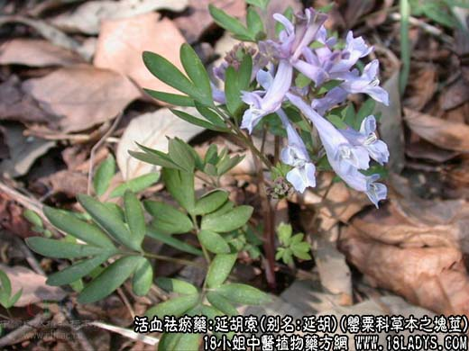
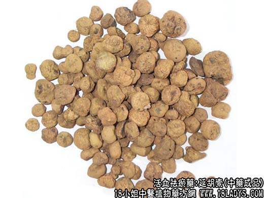

【中药概述】
延胡索，别名：延胡、玄胡索、元胡索、元胡，为罂粟科草本植物延胡索的块茎。辛、苦，温。归心、肝、脾经。
活血行气止痛：用于血瘀气滞的胸胁脘疼痛、痛经、疝痛、腰痛、关节痛、跌打肿痛等多种疼痛证，皆有活血行气、止痛之效。常随配伍不同，而应用颇广。如（<女科大全>延胡索散）。
【药物形态】
本品呈不规则的扁球形，直径0.5～1.5cm。表面黄色或黄褐色，有不规则网状皱纹。顶端有略凹陷的茎痕，底部常有疙瘩状突起。质硬而脆，断面黄色，角质样，有蜡样光泽。气微，味苦。
【药效鉴别】本品为止痛专药，专治一身内外上下诸痛，尤长于止心腹痛。
【药理作用】有明显的镇痛作用，其中左旋延胡索乙素即颅痛定，其镇痛作用明显，并有镇静作用。
【化学成分】含生物碱达20余种，有延胡索甲素、乙素、丙素、丁素、戊素、己素、辛素、壬素，及延胡索胺碱等。
【用量用法】5——10g，水煎服，研末服。外用适量。
【附】醋延胡索：可增强其止痛作用，以行气止痛力胜。如（<圣惠方>金铃子散）。
本文解释权归收纳中草药图谱的中药大全所有，本文地址：https://www.daquan.com/post/1997.html